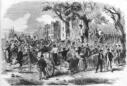
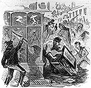
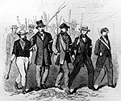

This is an archived copy of History Matters, provided by the Roy Rosenzweig Center for History and New Media. To explore this content in a new interface, visit Who Built America?.

|
 |
Pictures of news events sometimes tell us more about the point of view of a newspaper's publisher, or editor, or artist, or photographer, or readership than about the events themselves. All pictorial newspapers in 1863 published pictures showing attacks on African Americans that occurred during the Draft Riot. But the ways rioters were portrayed varied. |
| This second picture, from Harper's Weekly, shows rioters looting a Second Avenue drugstore. The Weekly, which supported the Republican party and espoused nativist (anti-immigrant) sentiments, caricatured rioters to emphasize their Irish ethnicity and brutality. |
 |
 Frank Leslie's Illustrated Newspaper, August 1, 1863 | Frank Leslie's Illustrated Newspaper also used Irish caricatures in its pictorial news coverage of the Draft Riot - but not consistently. This picture, from Leslie's, shows an orderly and uncaricatured "group of rioters marching down Avenue A." Leslie's readers included many Irish Catholic New Yorkers. |